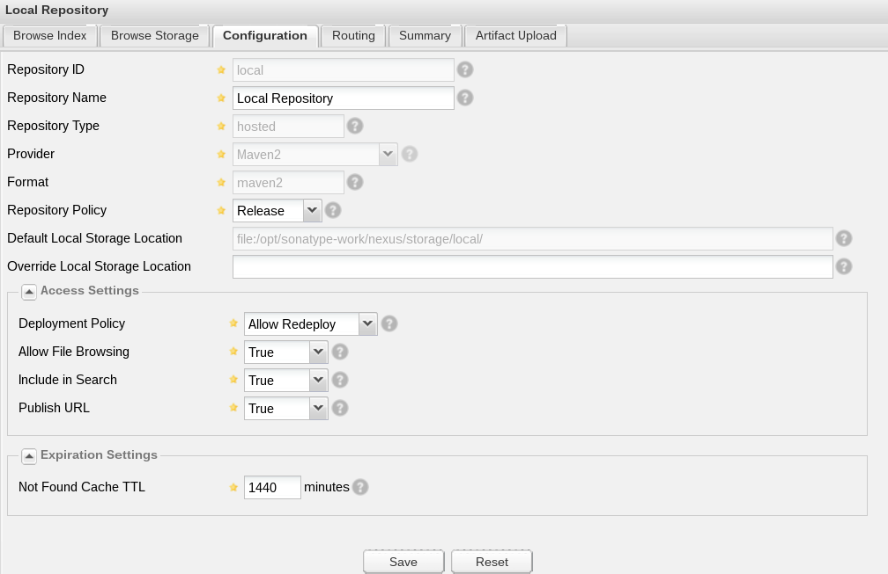

Nexus Repository OSS is an artifact repository manager provided by Sonatype. This post describes how to install Nexus on Debian Linux. For this tutorial, I have chosen the version 2 because the version 3 doesn't support Maven yet.
Debian
-
Install Debian Stretch RC1
-
Install sudo
# apt-get install -y sudo
# adduser UserName sudo
- Update system
# sudo apt-get update && sudo apt-get upgrade
Prerequisites
- Install Java Runtime Environment
$ sudo apt-get install -y openjdk-8-jre
Nexus Repository
- Create system user and group
$ sudo useradd --shell /usr/sbin/nologin --system --no-create-home nexus
- Download Nexus
$ wget http://www.sonatype.org/downloads/nexus-latest-bundle.tar.gz
- Install Nexus
$ sudo tar xvzf nexus-latest-bundle.tar.gz -C /opt/
$ sudo ln -s /opt/nexus-2.14.2-01 /opt/nexus
- Change the user and group ownership of Nexus' folders
$ sudo chown -R nexus:nexus /opt/nexus
$ sudo chown -R nexus:nexus /opt/nexus-2.14.2-01
$ sudo chown -R nexus:nexus /opt/sonatype-work
- Create startup script for Systemd
$ sudo nano /etc/systemd/system/nexus.service
[Unit]
Description=Sonatype Nexus Repository OSS
[Service]
Type=forking
User=nexus
Group=nexus
ExecStart=/opt/nexus/bin/nexus start
ExecReload=/opt/nexus/bin/nexus restart
ExecStop=/opt/nexus/bin/nexus stop
[Install]
WantedBy=default.target
- Start the service
$ sudo systemctl enable nexus
$ sudo systemctl start nexus
-
Open http://nexus.intra.net:8081/nexus in your browser to configure Nexus
-
Log in with administrator credential : username = admin and password = admin123
Warning: Change the default password.
- Create a "Local Repository"

What still needs to be done
- Maven client
- Right management
- Enable HTTPS on Jetty (Especially for Secure Cookies)
- Enable standard port for HTTPS (TCP/443 with nginx RP)